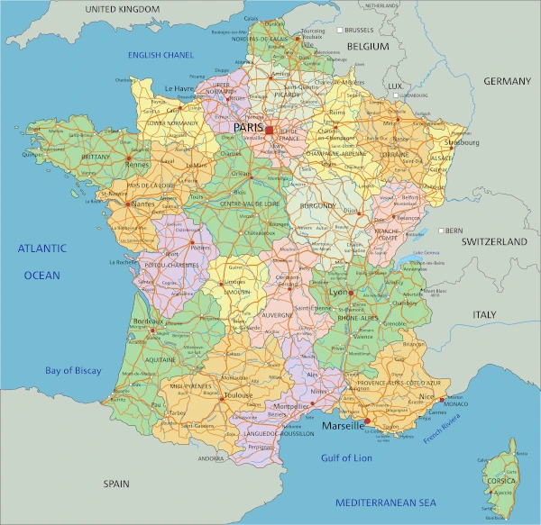

Summary
France is one of the world's most visited countries, famous for its rich history, art, cuisine, fashion, and landscapes. From the romance of Paris to the vineyards of Bordeaux, the beaches of the French Riviera, and the Alpine peaks, France offers a mix of culture, relaxation, and adventure. The capital of France is Paris and the spoken language is French, however English is also widely spoken in tourist areas. The best time to visit is during summer/autumn when the weather is pleasant with fewer crowds.
Getting around
Transport
France has an excellent transportation network, making it easy to move between cities and regions. High-speed TGV trains connect major hubs quickly and comfortably, while regional trains and buses reach smaller towns. In cities, public transit is reliable, Paris offers an extensive metro, RER, buses, and trams. For rural areas like Provence or the Loire Valley, renting a car gives the most flexibility. Domestic flights are available but often unnecessary thanks to efficient rail service.
Safety
France is generally safe for travelers. Petty theft, especially in crowded areas, train stations, and major attractions—can happen, so keep valuables secure and stay aware of your surroundings. At night, well-lit central areas are safe to navigate, though it’s wise to avoid isolated spots. Follow local guidance during demonstrations or strikes, which occur occasionally and may affect transport schedules.